Minecraft Bedrock · emülatörde çekildi · v1.51.0
Oyundan kareler
Hepsi aynı düz dünyada, aynı kurulumda: bir TNT, dört saniye fitil, sonra bu. Kareler Android emülatöründeki Minecraft'tan bir betikle çekiliyor — sahneyi kurar, kamerayı yerleştirir, ateşler ve saniyede bir kare alır; nasıl çalıştığı docs/emulator.md'de. Tam boy halleri ve her çekimin otuz karelik kontak sayfası depoda: docs/kareler.
Dünyayı boyayanlar
Bu TNT'ler hasar vermek yerine çevredeki blokları başka bir şeye çevirir; yarıçapı katalogda yazar.
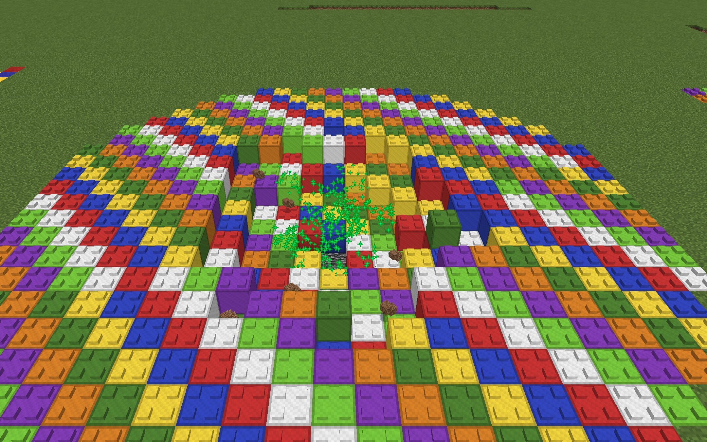
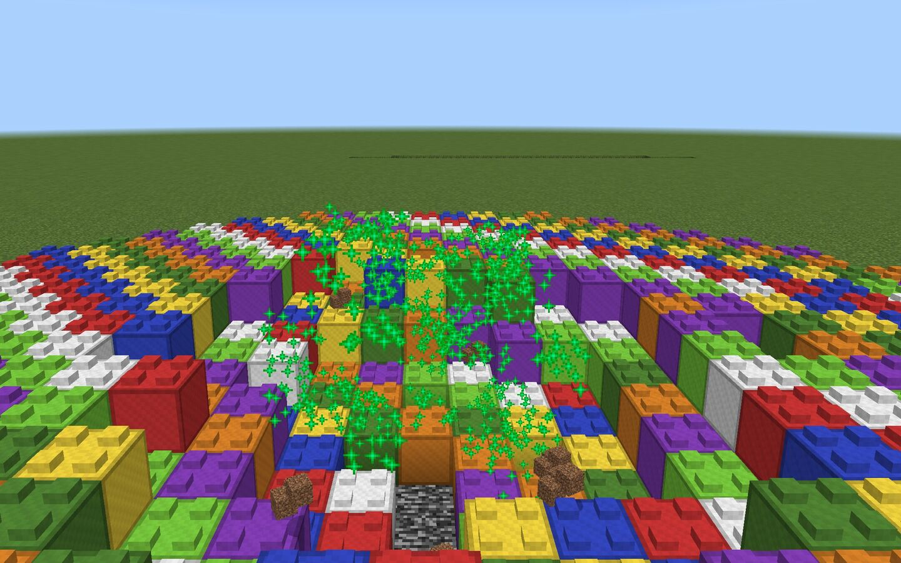
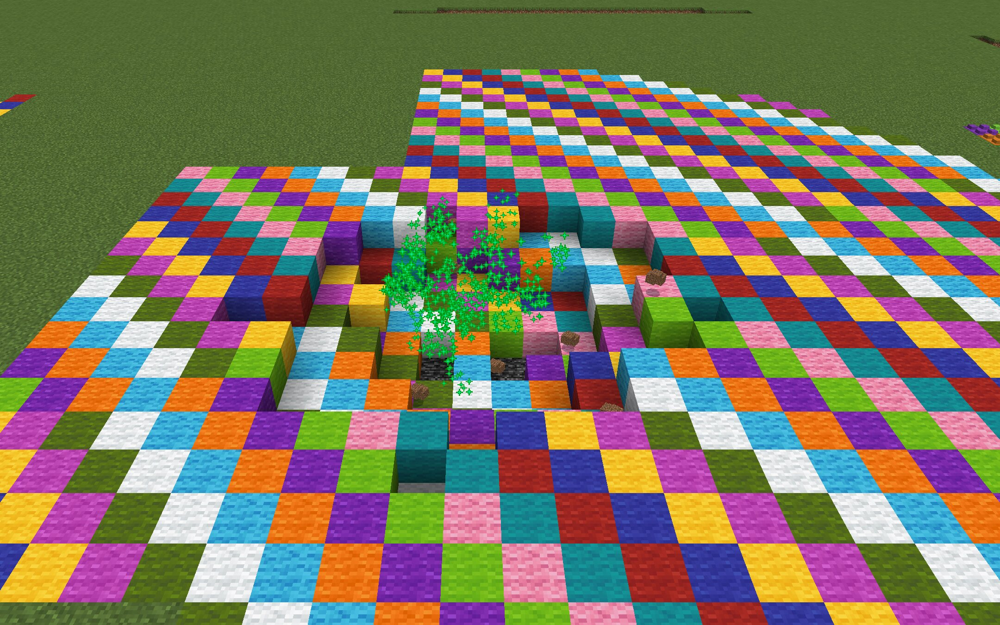
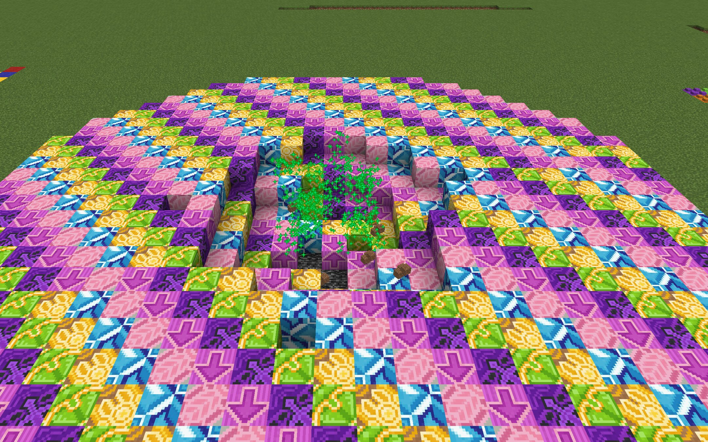
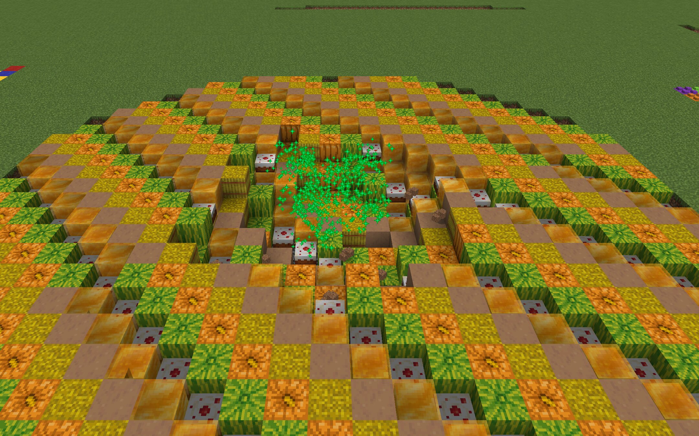
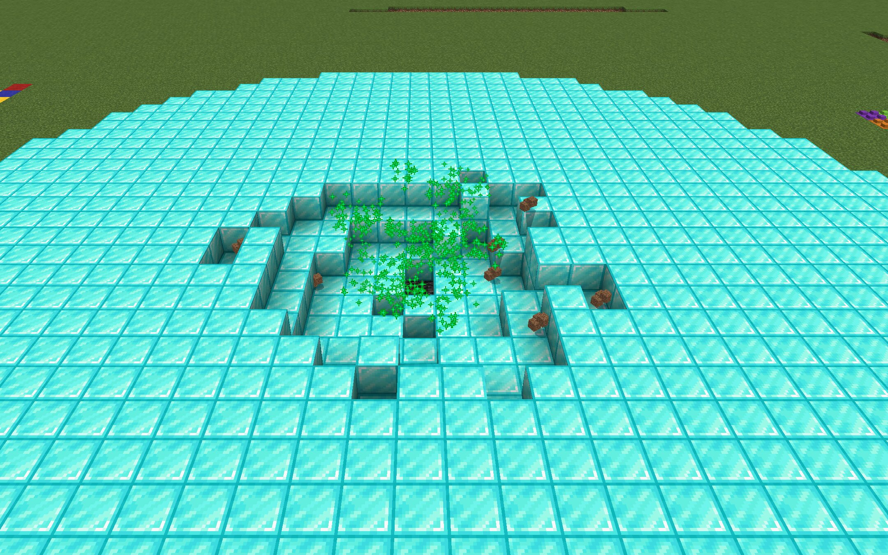
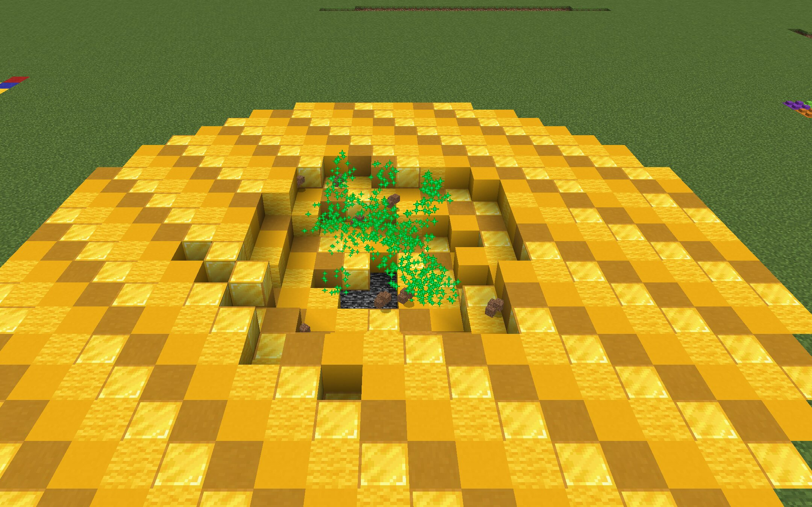
Zincirleme patlayanlar
Patlayıcı Kum normal kum gibi görünür; kazılınca TNT gücünde patlar ve yakındaki kumları, TNT'leri de ateşler.
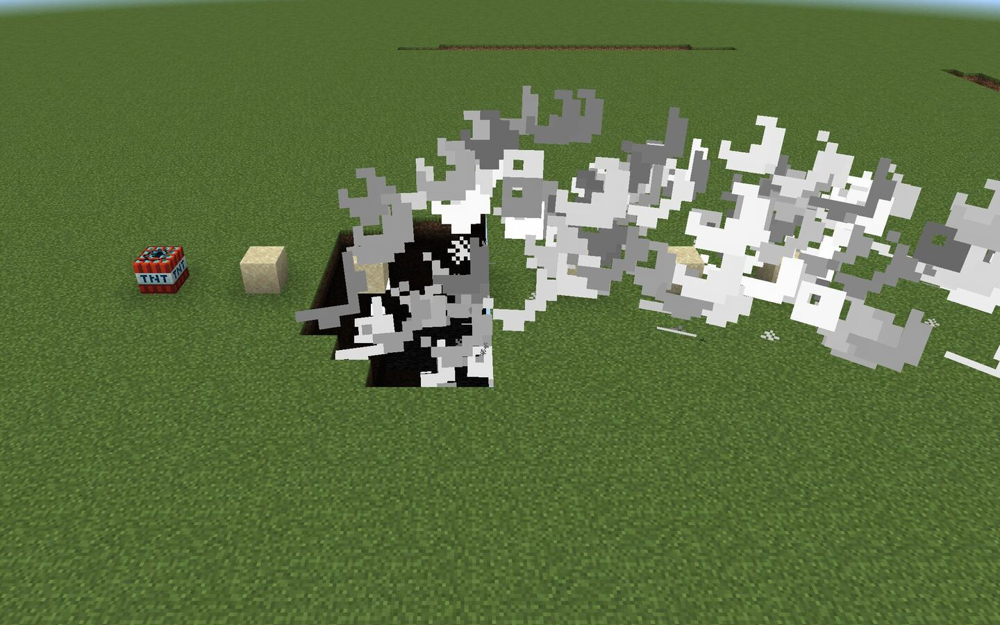
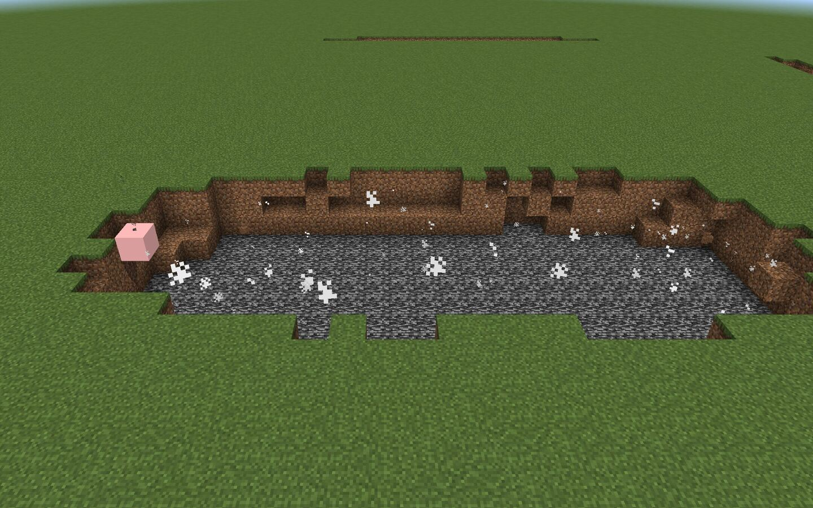
Yapı kuran ve donduranlar
Kimi patlama geriye bir şey bırakır.
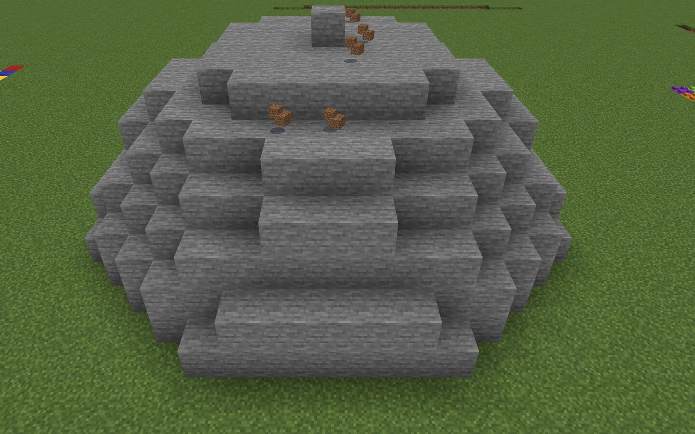
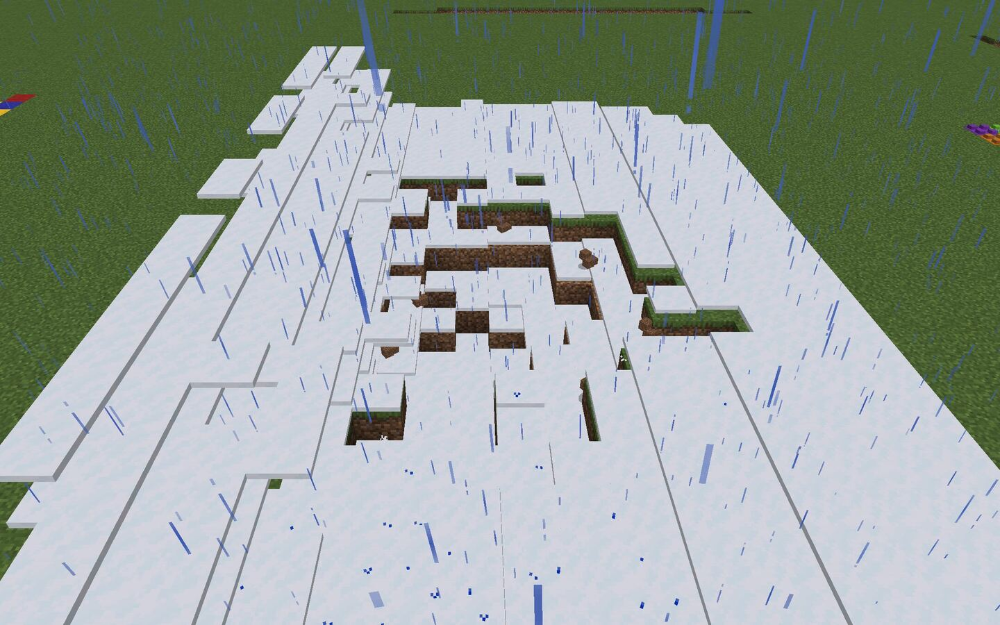
Hepsi bir arada
Yedi TNT bir hatta dizilip aynı anda ateşlendiğinde efektler üst üste biniyor.
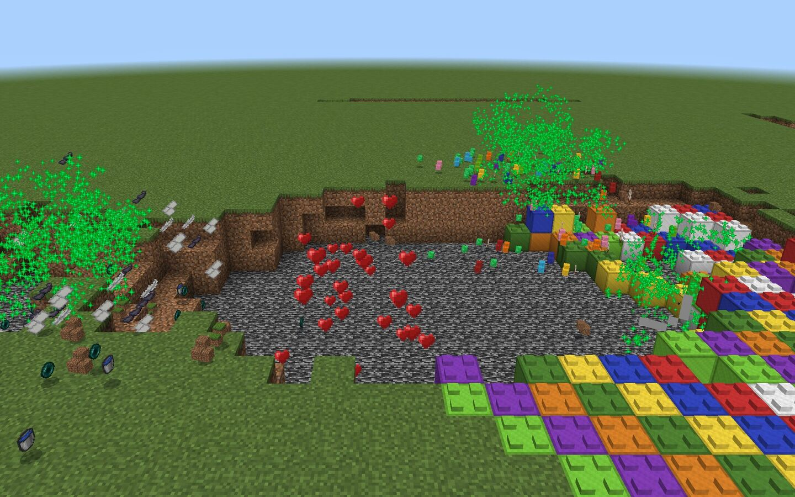